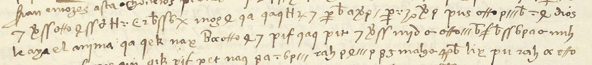

At a glanceKey recovered from the ciphertext · partial: all letter signs, 376 of 612 code tokens firm
- The letter
- The viceroy of Sicily to Ferdinand of Aragon, Messina, 27 April 1503. Clear Spanish and cipher alternate over four pages; the endorsement reads “Del virrey de Siçilia en çifra”.
- Where
- Bibliothèque nationale de France, Espagnol 318 no. 94, ff. 120r–121v (Gallica, canvases 452–455). Part of catalogue item 9.
- The cipher
- A homophonic alphabet of invented signs, 39 classes for 21 letters, with code groups of two to four Latin letters (113 distinct). The code is two-part: its groups are not in the alphabetical order of their meanings.
- How the key was found
- Michael Brackx transcribed the letter, annealed the single signs against a Spanish letter model with no crib, split the doubtful sign classes on the scans and read code groups from context. Here the transcription was compared with the scans, and the alphabet was found again from random starts; on shuffled text the same search fails.
- What it says
- The night after Seminara, the looting and an inquiry into who profited, three principal prisoners in the castle, the dispute over Portocarrero’s post after his death, Hugo de Cardona’s following, and a proposed election among the captains.
- Still open
- About 90 code groups (143 tokens), 14 tentative readings, and spelled-out stretches that do not yet parse. Single words stay provisional.
- Credit
- The transcription, the key and the readings are Michael Brackx’s (GitHub issue #62, October 2026, with Claude). This page records them and the checks made on them.
- Other letters
- The letter shared an entry with no. 93 (Lorenzo Suárez, Venice 1504) until 21 October 2026: a different cipher, with its own page. The volume’s other ciphers: no. 92, no. 5, no. 95.
01 The letter and the split
No. 94 is four pages in a secretary’s hand, dated at Messina on 27 April 1503: six days after Fernando de Andrada’s victory at Seminara in Calabria (21 April) and one day before Cerignola. The viceroy writes in clear Spanish and drops into cipher for the sensitive parts, so every ciphered stretch has clear text on both sides. F. 121v carries the superscription, the seal and a later endorsement, “Del virrey de Siçilia en çifra”. There is no decipherment anywhere in the volume.

pns and the signs that spell carero, and the clear text goes on “dios / le aya el anyma”: Puertocarrero, Dios le aya el ánima. Then the code groups qa (que), qek and nae (los). Image: Bibliothèque nationale de France, Espagnol 318 f. 120v, via Gallica.Until 21 October 2026 this page’s letter shared an entry with no. 93, Lorenzo Suárez’s letter from Venice of February 1504. Both were unread, and no shared key was claimed. Brackx found that the alphabet of no. 94 does not break no. 93 and that the two share only seven code groups. The check here agrees. No. 93’s commonest groups (gto 21 times, pie 19, heg 13, zoe, zoc, hug) never occur in no. 94. No. 94’s commonest (qa 65, rah 61, mny 47, qag 32) are absent from no. 93, except pif twice. The two letters use different keys, so no. 94 has its own entry.
02 The key
Brackx’s alphabet assigns 39 sign classes to 21 letters (his labels are ASCII stand-ins for the glyphs, defined in the issue). Vowels and the common consonants have two to seven signs each:
| letter | signs (Brackx’s labels) | letter | signs |
|---|---|---|---|
| a | 3, O, o, p, q | n | 5 (small Ʀ), S (long ss) |
| c | F1 (crossed f), W (otto ligature) | o | A (alpha), X, e |
| d | 2 (n with tail), T | p | D, d (delta) |
| e | 4, b | q | V |
| g | G (tall Ꞩ) | r | = (dash), I (triple minim), M |
| h | 8 | s | 7, 9, F2, L, Q, Z5, f |
| i | : (dots), P (curly thorn) | t | 6, t |
| l | H, K | u | B (ß), a |
| m | E |
The code groups were given values from context, one at a time. About twenty are firm, each fixed by several contexts that agree: qa que, rah y, mny de, qag se, mys en, mnb la, pif no, nyb lo, nae los, lux como, pat por, nyl havía, gik su, reg yo, mnh gente, qe quando, qaz V. Al., pns Puerto- in Portocarrero, and malg/malh for the digraph ll. Fourteen more are tentative (mas el?, pad bien?, nag más?, neb hazer? …). The firm readings break alphabetical order, since gik su and nyl havía sort before mny de. So the code is two-part, and a group’s neighbours say nothing about its meaning.
mny = de matches Bergenroth’s muy = de in his reconstruction of the Gran Capitán’s Gran cifra of 1501–04: n and u are the same two minims in this hand. The group initials (m-, q-, n-, r-, p-, l-) fall in that cipher’s band too. No. 94 is in the Gran cifra or a close relative of it.
03 What it says
Single words are still provisional; the sense of each passage is firmer than any word in it. In outline, following Brackx’s reading:
- The crossing. The galley could not pass the Faro of Messina; Fernando de Andrada had arrived, and it turned back (clear text).
- The night entry. The writer’s men moved off at nightfall; at midnight the infantry began to enter and looted; there were stabbings among them and men surrendering a merced; Cardona is named. Seminara itself is spelled out in cipher, semenaoa.
- The spoil. A conservador, the camp at Rocca d’Angitola, a shortage holding up the fleet; the captains required to guard the ropa and the prisoners.
- The inquiry. Suspicion against those who profited, and a pesquisa under oath “as is proper” to find the guilty. Three principal prisoners are held, well treated, in the castle until the king says what is to be done with them.
- Portocarrero. Portocarrero is dead (“Dios le aya el ánima”), and there is a dispute over renouncing the post he had given.
- Cardona’s faction. “Estos de Cardona” show presumption and have “muy gran partido”; the troops are in disorder; 800 peones have been sent; the writer reports how many men don Hugo de Cardona has.
- The command. Seniority “where so many principal captains” serve; an elección is proposed and the others object. On a man of Valencia the viceroy cannot judge, nor what credit the king can give him.
Words spelled out letter by letter in the cipher anchor these: puertocarero (three times), cardona, semenaoa, tienedonugo (“tiene don Hugo”), pesquisa, iuramento, presoneros principales, punsaladas.
04 How it was checked
Brackx’s transcription and readings were made with Claude and were not checked by a second person, so before anything was recorded here they were tested (the script is check94.py in the folder):
- Transcription. F. 120r lines 1–3 and f. 121r lines 1–2 were compared sign by sign with the scans. The signs, the code groups and the classes are as he has them.
- The score. His −2.61 nats per character against −1.91 for clean Spanish set a noisy decrypt against a clean corpus. With the project’s period model (Spanish 1490–1650, order 5), his key scores −2.59 on the cipher runs, and the letter’s own clear passages score −2.23. The best of 200 keys with the same values shuffled scores −4.48.
- Overfitting. An independent anneal here, started from four random keys, reached his key twice (35 of the 40 sign labels agree, −2.58). On the same signs in shuffled order the search reaches only −3.63 to −3.77. The project’s validation test (
docs/_validate.py) passes: the reading scores −2.35 with the firm code groups, and the best key fitted to shuffled text −3.12. - Words. Spanish words of four letters or more cover 63 % of the deciphered runs. They cover 77 % of the letter’s clear passages and 10–13 % of the runs under shuffled keys.
05 What is still open
- About 90 code groups (143 tokens), most of them occurring once or twice: nouns, names and verbs that context does not fix. Two lists could settle them, and neither is online: Bergenroth’s Gran cifra sheet (BNE MSS 20.211/52) and the “Cifra del visorrey” that opens Galende Díaz’s file BRAH 9/15.
- Fourteen tentative readings (93 tokens), each with one or two good contexts.
- Spelled-out stretches that do not parse, about a fifth of the letter-sign text. These are single misread glyphs in a transcription made by eye: a third of the ß/thorn/B glyphs were not checked on crops, and the sign Brackx labels
Kwavers between l and s. A line-by-line pass over the scans with the final key is the next step.
06 Sources
- BnF, Département des Manuscrits, Espagnol 318 no. 94, ff. 120r–121v, ark
btv1b52503046qon Gallica (canvases 452–455). - Michael Brackx, “Solution: catalogue 9 (esp318no93) — no. 94”, GitHub issue #62, 21 October 2026: transcription, key, codebook and provisional reading.
- G. A. Bergenroth’s reconstruction of the Gran cifra, BNE MSS 20.211/52, as described by Quirantes (2018); J. C. Galende Díaz (1994), for BRAH 9/15.
Notes, profile, Brackx’s sign transcription (ct94_brackx.txt) and the checks in targets/esp318no94/; the scans in targets/esp318/.